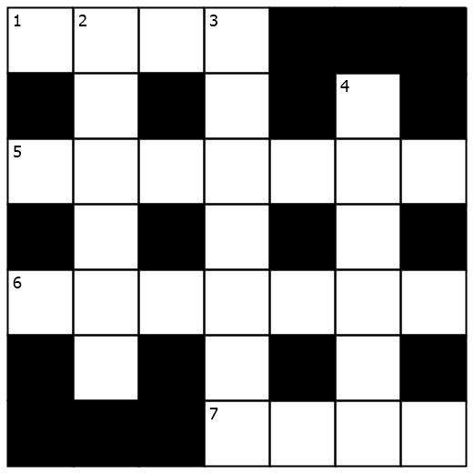

Downright Cryptic

Across
- We heard minerals are what you can use to propel a boat (4)
- Stabilize body and laugh at newbie’s comical errors, at first (7)
- Gordon Sumner receives approval, adding fuel to the fire (7)
- Child sent back “why?”—overly curious about others' affairs (4)
Down
- Lies ahead within Ottawa itself (6)
- Loosen up broken cankles (7)
- Without beginning, climbs trails that might be followed by a dog (6)
This is a cryptic crossword. If you haven't done cryptic crosswords before, we recommend reading this brief introduction to cryptic crossword clues.